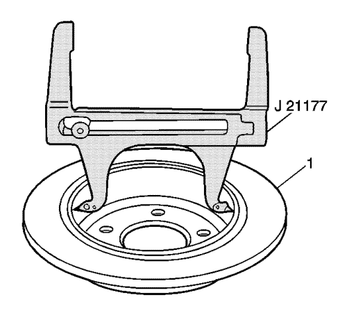
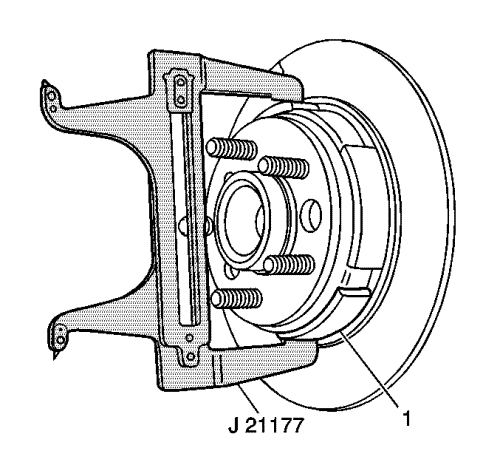

Ajuste del freno de mano
Herramientas especiales
CH-21177-A Calibrador de holgura entre zapata y tambor de freno.
Si desea informarse sobre herramientas regionales equivalentes, consultar Herramientas especiales .
Advertencia: Consulte Advertencia relacionada con el polvo procedente de los frenos en la sección Prólogo.
- Desactive el regulador del cable del freno de mano. Consultar Desactivación del regulador del cable del freno de mano .
- Gire el encendido a la posición OFF.
- Elevar el vehículo y soportarlo de manera segura. Consultar Elevación del vehículo con un gato .
- Desmontar las ruedas traseras del vehículo. Consultar Desmontaje y montaje de la rueda y el neumático .
- Desmonte los discos de freno traseros. Consultar Sustitución del rotor de freno trasero .

- Ajuste el calibrador de holgura entre la zapata y el tambor de freno CH-21177-A en el punto más ancho del interior de la sección del tambor del rotor de freno de disco.
| • | Coloque los contactos de la herramienta en el punto más ancho del tambor (1) del freno de mano. |
| • | Apriete el tornillo prisionero de la herramienta antes de retirar la herramienta del tambor. |

- Coloque el calibrador de holgura entre la zapata y el tambor de freno CH-21177-A sobre las zapatas (1) del freno de mano en el punto más ancho.
- Gire la herramienta de ajuste del actuador hasta que las zapatas del freno de mano entren en contacto con el calibrador de holgura entre la zapata y el tambor de freno CH-21177-A.
- Repita los pasos del 6 al 8 para el conjunto opuesto del freno de mano.
- Monte los discos de freno traseros. Consultar Sustitución del rotor de freno trasero .
- Instalar la llanta trasera y los conjuntos de rueda. Consultar Desmontaje y montaje de la rueda y el neumático .
- Active el regulador del cable del freno de mano. Consultar Activación del regulador del cable del freno de mano .
- Aplique el freno de mano electrónico.
- Sitúe el cambio en PUNTO MUERTO.
- Eleve y soporte el vehículo de forma que los conjuntos de neumático y llanta queden separados del suelo.
Nota: Si las ruedas traseras giran durante la siguiente comprobación, repita el procedimiento completo de ajuste.
- Intente girar los conjuntos traseros de neumático y rueda.
| • | Las ruedas no deberían girar hacia delante. |
| • | Las ruedas no deberían girar hacia atrás, o deberían mostrar una resistencia significativa al giro hacia atrás. |
- Desbloquee el freno de mano electrónico.
- Compruebe que los conjuntos de llanta y neumático traseros giran libremente y no presentan ninguna resistencia significativa al giro hacia delante o hacia atrás.
- Si los conjuntos de llanta y neumático traseros no giran libremente y sin ningún tipo de resistencia hacia delante o hacia atrás, repita el procedimiento completo de ajuste.
| © Copyright Chevrolet Europe. All rights reserved |